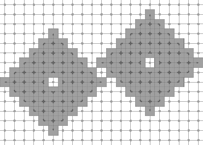

|
DGtal 0.3.0
|
This part of the manual describes how to export DGtal objects into graphics files (and later buffers). For now, it is limited to 2D DGtal objects like CDomain, Object, CDigitalSet, Point, ImageContainer. The current supported export formats are SVG, EPS, and XFIG. It is currently based on LibBoard, but may evolve later (it will probably move to Cairo). This document is dedicated both to DGtal users and developers.
Table of contents:
To use the DGtalBoard stream, you must include the header
#include "DGtal/io/DGtalBoard.h"
The class DGtalBoard is designed so as to make easy the visualization of digital objects, also it is for now limited to 2D discrete geometry. For the user, it is very simple to visualize digital sets, objects and others. To do so, the user has just to instantiate a DGtalBoard object. This object is then an output stream, and if you wish to visualize some object, you use the stream operator << to output the object on the board. When you are finished, there is a command to export your graphics in SVG, XFIG or EPS format.
The following code snippet defines three points and a rectangular domain in Z2. It then displays them in a DGtalBoard object. The two last commands export the graphics in SVG and EPS format. The full code is in dgtalboard-1-points.cpp.
using namespace DGtal; using namespace DGtal::Z2i; Point p1( -3, -2 ); Point p2( 7, 3 ); Point p3( 0, 0 ); Domain domain( p1, p2 ); DGtalBoard board; board << domain << p1 << p2 << p3; board.saveSVG("dgtalboard-1-points.svg"); board.saveEPS("dgtalboard-1-points.eps");
This program outputs this image.
Drawing points with Board.
It is clear that the order in which you display elements has an influence on the exported graphics.
Displaying a digital set uses also the stream mechanism. You just have to use the flux operator << with a DigitalSet in parameter.
Point p1( -10, -7 ); Point p2( 10, 7 ); Domain domain( p1, p2 ); DigitalSet shape_set( domain ); Shapes<Domain>::addNorm1Ball( shape_set, Point( -5, -1 ), 7 ); Shapes<Domain>::addNorm1Ball( shape_set, Point( 5, 1 ), 7 ); shape_set.erase( Point( -5, -1 ) ); shape_set.erase( Point( 5, 1 ) ); DGtalBoard board; board << domain << shape_set; // display domain and set board.saveSVG( "dgtalboard-2-sets-1.svg");
Digital set drawing with Board.
Some digital elements (like Object, PointVector, ArithmeticalDSS) may have several possible ways to be rendered as a graphical object. For instance, a pixel may be seen more as a point or more as a unit square in the plane. In the same idea, a digital object may or may not be represented with its adjacency relations. Otherwise said, one may wish to see the set, another may wish to see the graph.
You may choose a mode for a drawable element by outputing on the stream a SetMode object. You just have to specify the classname (the easiest way is to call the method styleName() on an instance of the correct type) and the desired mode (a string). An Object is sensitive to the mode "" (default, just the set is displayed) and to the mode "DrawAdjacencies" (the graph is drawn). The following code snippet uses the digital set shape_set defined above.
// Object with couple (4,8) of adjacency. Object4_8 shape( dt4_8, shape_set ); board << domain // display domain << SetMode( shape.styleName(), "DrawAdjacencies" ) << shape; // and object with mode "DrawAdjacencies" board.saveSVG( "dgtalboard-2-sets-2.svg"); board.clear(); // Object with couple (8,4) of adjacency. Object8_4 shape2( dt8_4, shape_set ); board << domain // display domain << SetMode( shape2.styleName(), "DrawAdjacencies" ) << shape2; // and object with mode "DrawAdjacencies" board.saveSVG( "dgtalboard-2-sets-3.svg");
Note the different adjacency relations depending on the topology chosen for the object. The full code is in dgtalboard-2-sets.cpp.

(4,8)-object | 
(8,4)-object |
Here is a list of modes for several digital drawable elements ("" is always default mode).
For instance, to change the drawing mode for the next object dss of type ArithmeticalDSS, you may use the line
board << SetMode( dss.styleName(), "BoundingBox" );
If you wish to display both the points of a DSS an its bounding box, you must draw it twice, as follows:
board << SetMode( dss.styleName(), "BoundingBox" ) << dss << SetMode( dss.styleName(), "Points" ) << dss;
All drawable elements have a default style for default. You may nevertheless modify it whenever you want for any object. The simplest way is to use instances of the following classes:
An instance of one of this class is then attached to the drawable element by creating an instance of CustomStyle. Do not worry about deallocating the CustomXXX instances. This is done automatically. The following snippet indicates how to use these classes.
Point p1( -3, -2 ); Point p2( 7, 3 ); Point p3( 0, 0 ); Domain domain( p1, p2 ); DGtalBoard::Color red( 255, 0, 0 ); DGtalBoard::Color dred( 192, 0, 0 ); DGtalBoard::Color dgreen( 0, 192, 0 ); DGtalBoard::Color blue( 0, 0, 255 ); DGtalBoard::Color dblue( 0, 0, 192 ); DGtalBoard board; board << domain << CustomStyle( p1.styleName(), new CustomColors( red, dred ) ) << p1 << CustomStyle( p2.styleName(), new CustomFillColor( dgreen ) ) << p2 << CustomStyle( p3.styleName(), new CustomPen( blue, dblue, 3.0, DGtalBoard::Shape::SolidStyle, DGtalBoard::Shape::RoundCap, DGtalBoard::Shape::RoundJoin ) ) << p3; board.saveSVG("dgtalboard-3-custom-classes.svg");
This program (see full source at dgtalboard-3-custom-classes.cpp) outputs the following graphics.

Custom drawing.
Another way to change the style is to create yourself a minimal structure to hold the style. The following example shows how to change the pen and fill color on-the-fly. First of all, the custom style class:
struct MyDrawStyleCustomColor : public DrawableWithDGtalBoard { DGtalBoard::Color myPenColor; DGtalBoard::Color myFillColor; MyDrawStyleCustomColor( const DGtalBoard::Color & penColor, const DGtalBoard::Color & fillColor ) : myPenColor( penColor ), myFillColor( fillColor ) {} virtual void selfDraw( DGtalBoard & aboard) const { aboard.setFillColor( myFillColor); // specifies the fill color. aboard.setPenColor( myPenColor ); // specifies the pen color. } };
The custom style is then attached to drawable element by creating an instance of CustomStyle. Do not worry about deallocating the MyDrawStyleCustomColor instances. This is done automatically.
// same shape as above board << domain << CustomStyle( p1.styleName(), new MyDrawStyleCustomColor( red, dred ) ) << p1 << CustomStyle( p2.styleName(), new MyDrawStyleCustomColor( green, dgreen ) ) << p2 << CustomStyle( p3.styleName(), new MyDrawStyleCustomColor( blue, dblue ) ) << p3; board.saveSVG("dgtalboard-3-custom-points.svg");
This program (see full source at dgtalboard-3-custom-points.cpp) outputs the following graphics.

Custom drawing of point.
You can use colormaps in conjunction with custom styles for DGtalBoard. Several classes represent colormaps: CColorMap, ColorBrightnessColorMap, GradientColorMap, GrayscaleColorMap, HueShadeColorMap. You can use any of them to produce colors. Here, we define a simple colormap going from blue to red then yellow. Then, each pixel of the digital set shape_set (see above) is displayed with a fill color that depends on its distance to the point c1.
An interesting point of the exemple below is how we specify a custom style for a specific mode of some drawable element (here a Point). We just add "/"+ModeName to the name of the style.
// Creating colormap. GradientColorMap<int> cmap_grad( 0, 15 ); cmap_grad.addColor( DGtalBoard::Color( 50, 50, 255 ) ); cmap_grad.addColor( DGtalBoard::Color( 255, 0, 0 ) ); cmap_grad.addColor( DGtalBoard::Color( 255, 255, 10 ) ); // Creating board. DGtalBoard board; board << SetMode( domain.styleName(), "Paving" ) << domain << SetMode( p1.styleName(), "Paving" ); // This is the name of the style for a Point in mode "Paving". string specificStyle = p1.styleName() + "/Paving"; for ( DigitalSet::ConstIterator it = shape_set.begin(); it != shape_set.end(); ++it ) { unsigned int d = (unsigned int) ceil( ( *it - c1 ).norm() ); // specific color depending on the distance to point c1. board << CustomStyle( specificStyle, new CustomColors( DGtalBoard::Color::Black, cmap_grad( d ) ) ) << *it; } board.saveSVG( "dgtalboard-4-colormaps.svg");
This program (see full source at dgtalboard-4-colormaps.cpp) outputs the following graphics.
Colormap example.
More precisely, several styles may be applied before some drawable element is displayed. They are called in this order.
Therefore, if you change the drawing mode of a drawable element and if you wish to have a specific behavior, you must attach the custom style to the mode style of your object. For instance, if your object is p and the mode is "Special", there is some line:
board << CustomStyle( p.styleName() +"/Special", new ... );
Another example involving ArithmeticDSS is dgtalboard-5-greedy-dss.cpp. It outputs the following graphics:

Greedy DSS Decomposition
The DGtalBoard mechanism is a simple mechanism for displaying 2D digital objects and graphics. A 3D adaptation is under development. Furthermore, in order to enhance its graphics and export possibilities, the hidden drawing library will certainly move to Cairo.
This section aims at helping the developer to understand the background of the DGtalStream mechanism, and then to create its own drawable elements.
Following the concept paradigm adopted in DGtal, the DGtalBoard object may only displayed instances of classes that realize the concept CDrawableWithDGtalBoard. A drawable element must specify his classname and a default style under the form of a (simple) DrawableWithDGtalBoard object. For instance, the default style structure for a PointVector is:
struct DefaultDrawStyleGrid : public DrawableWithDGtalBoard { virtual void selfDraw( DGtalBoard & aBoard ) const { aBoard.setPenColor(DGtalBoard::Color::Black); aBoard.setLineStyle( DGtalBoard::Shape::SolidStyle ); } };
A DrawableWithDGtalBoard is just an interface that specifies a virtual method selfDraw. Last but not least, the drawable element defines a (non-virtual) method selfDraw which contains the drawing commands.
The DGtalBoard class operates as an output stream for drawable elements. It inherits from LibBoard::Board. This base class holds the drawing capabilities for several export formats. You must look at this class to see the drawing possibilities.
An important method of DGtalBoard is the templated DGtalBoard::operator<<. This method takes any drawable element (satisfying CDrawableWithDGtalBoard) and takes care of setting the correct style and calling the drawing method of the object.
The DGtalBoard remembers what is the current style for a given drawable element type. Furthermore, it can remember its current mode. Last, it remembers also the specific style associated for this mode. Generally, as a developer, you do not have to take care at how user chooses their new style or new mode. You will only prepare in your class if you wish to have modes, and how you draw the object depending on the current mode.
The concept CDrawableWithDGtalBoard requires that the three following methods are defined:
LibBoard is a C++ library for simple Postscript, SVG, and XFig drawings.
It allows simple drawings in:
The main class of the library is the LibBoard::Board class. It is intended to be as simple as possible so that it can be used quickly in programs to generate the kind of figure one would rather not draw by hand, but which can be easily drawn by a computer (C++) program.
A clone of the LibBoard source code (release: 0.8.8-3) has been included in DGtal. Its classes are grouped into the namespace Board.
Written by Jacques-Olivier Lachaud.
 1.7.3
1.7.3